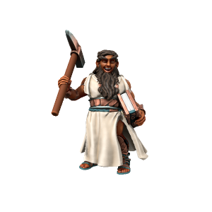

Dwarf

Far off on the copper-rich island of Kaiper, an isolate of iotun evolved to be shorter in stature without losing their tremendous strength. Under the watchful eye of the copper dragon Kypra, these isolated people built a rich and complex culture, eventually travelling back to the main continent and establishing an economic niche owing to their aptitude for mining and the vast quantity of valuable copper on their home island.
🡐 Home